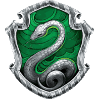
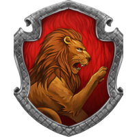
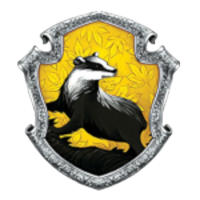
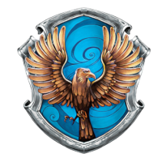

Sonserina ou Slytherin, casa dos ambiciosos e orgulhosos, seu brasão é uma serpente
prateada em um fundo verde. Foi fundada por Salazar Slytherin, seu salão comunal se encontra nas masmorras
debaixo do Lago Negro por isso tem uma iluminação esverdeada e a sua entrada é protegida por senha.
O fantasma da Sonserina é o Barão sangrento seu nome é desconhecido. Entre os seus alunos mais notáveis estão:
Severo Snape, Merlin, Tom Riddle, Fineu Nigellus Black, Draco Malfoy, Horácio Slughorn entre outros.

Grifinória ou Gryffindor, casa dos corajosos e orgulhosos, seu brasão é um leão dourado
em um fundo vermelho. Foi fundada por Godric Gryffindor, seu salão comunal se encontra em uma
das três maiores torres de Hogwarts e tem sua entrada guardada pelo quadro da 'Mulher Gorda'. O
fantasma da Grifinória é o Sir Nicholas de Mimsy-Porpington mas os alunos o chamam de Nick Quase-sem-Cabeça.
Entre os seus alunos mais notáveis estão: Harry potter, Tiago Potter, Lilian Potter, Alvo Dumbledore,
Rony Weasley, Hermione Granger, Neville Longbottom, Sirius Black, entre outros.

Lufa-Lufa ou Hufflepuff, casa dos humildes e gentis, seu brasão é um texugo preto em um fundo amarelo.
Foi fundada por Helga Hufflepuff, seu salão comunal fica próximo a cozinha de Hogwarts e tem um forte
feitiço repelente contra intrusos, caso erre a senha que deve ser batida em um barril que fica próximo a uma parede
ele explodirá lançando vinagre no intruso. O fantasma da Lufa-Lufa é o Frei Gorducho seu nome é desconhecido.
Entre seus alunos mais notáveis estão: Pomona Sprout, Newt Scamander, Cedrico Diggory, Ninfadora Tonks, entre outros.

Corvinal ou Ravenclaw, casa dos inteligentes e criativos, seu
brasão é uma águia bronze em um fundo azul. Foi fundada
por Rowena Ravenclaw, seu salão comunal fica em outra das
torres mais altas de Hogwarts e a porta só se abre para aqueles
que resolvem um enigma feito por uma aldrava enfeitiçada. O
fantasma da Corvinal é a Helena Ravenclaw mas os alunos a
chamam de Dama Cinzenta. Entre seus alunos mais notáveis
estão: Luna lovegood, Filio Flitwick, Garrick Olivaras, Murta
Warren, Gilderoy Lockhart, entre outros.